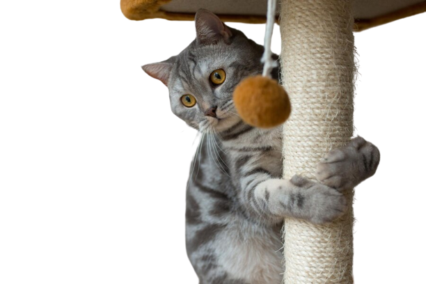

CACHORROS
GATOS
DICAS DE ADOÇÃO
CONTATO
Pesquise uma raça
Affenpinscher
Afghan Hound
African Hunting Dog
Airedale Terrier
Akbash
Akita
Buldogue Alapha de sangue azul
Husky Siberiano
Malamute do Alaska
Buldogue Americano
Bully Americano
Esquimó Americano
Esqimó Americano - miniatura
Foxhound-americano
Pit Bull Terrier Americano
American Staffordshire Terrier
American Water Spaniel
Anatolian Shepherd Dog
Appenzeller Sennenhund
Australian Cattle Dog
Australian Kelpie
Australian Shepherd
Australian Terrier
Azawakh
Barbet
Basenji
Basset Bleu de Gascogne
Basset Hound
Beagle
Bearded Collie
Beauceron
Bedlington Terrier
Belgian Malinois
Belgian Tervuren
Bernese Mountain Dog
Bichon Frise
Black and Tan Coonhound
Bloodhound
Bluetick Coonhound
Boerboel
Border Collie
Border Terrier
Boston Terrier
Bouvier des Flandres
Boxer
Boykin Spaniel
Bracco Italiano
Briard
Brittany
Bull Terrier
Bullmastiff
Cairn Terrier
Cane Corso
Cardigan Welsh Corgi
Catahoula Leopard Dog
Caucasian Shepherd (Ovcharka)
Cavalier King Charles Spaniel
Chesapeake Bay Retriever
Chinese Crested
Chinese Shar-Pei
Chinook
Chow Chow
Clumber Spaniel
Cocker Spaniel
Coton de Tulear
Dalmatian
Doberman Pinscher
Dogo Argentino
ou
Confira a galeria!
Ver mais
Quer
adotar
um pet?
